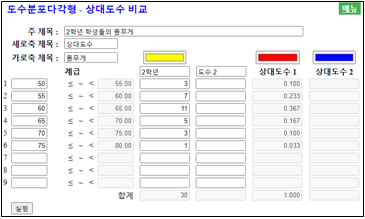
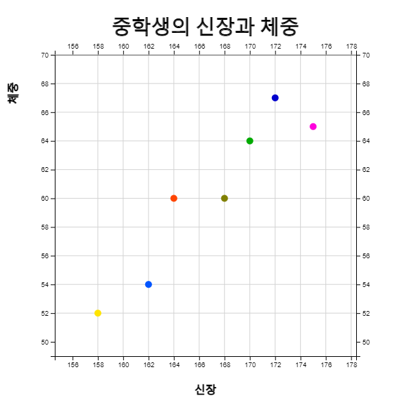
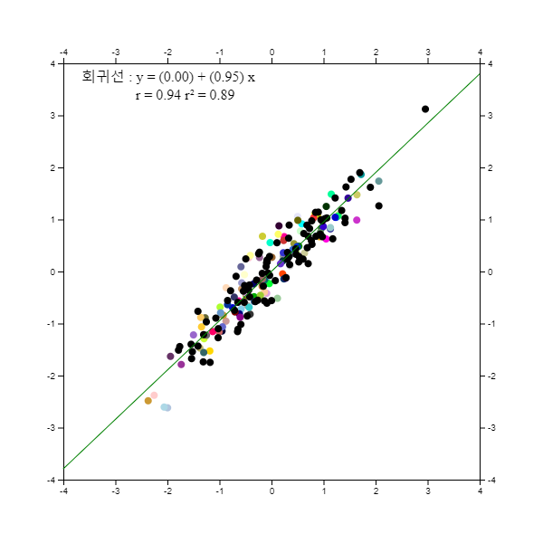

⭐ 생각열기 |
요사이 미세먼지가 자주 발생해 우리 생활에 불편을 주고 있다. 과연 한 달 중 며칠이나 미세먼지가 심하게 발생하는지 살펴보기 위해 서울의 미세먼지농도를 조사한 자료가 다음과 같다.
(자료 3.1) 2021년 2월 서울의 일평균 초미세먼지농도 (㎍/\(m^3\))
(환경부 대기환경정보 http://www.airkorea.or.kr 참조)
|
|
💎 탐구 |
1) 미세먼지농도 자료수가 28개나 있는데 전반적인 자료의 분포를 어떻게 쉽게 표현할 수 있을까?
2) 우리나라는 미세먼지 농도가 36(㎍/\(m^3\))을 넘으면 '나쁨'으로 으로 평가하는데
2월 중 며칠이나 있을까?
|
3. 양적 자료의 그래프
🌿 📈3.1 줄기와 잎 그림 |
양적 자료인 경우에 다음과 같은 그래프를 그려 분석한다. - 줄기와 잎 그림 - 히스토그램 - 도수분포다각형 |
3.1 줄기와 잎 그림
위의 예에서 미세먼지농도를 39, 18, 20, 과 같이 측정하였는데 이와 같이 자료를 수량으로 나타낸 것을 변량이라 한다.
<자료 3.1>과 같이 숫자로 된 자료는 십진법을 사용하기 때문에 각각의 십 자릿수에 해당하는 자료를 모아 다음과 같은 표로 정리할 수 있다. 즉, 첫 번째 자료 39는 십 자릿수가 '3' 이므로 이 자료를 세 번째 행에 적고, 그 다음 18은 십 자릿수가 '1'이므로 첫 번째 행에 적는다. 같은 방법으로 모든 자료를 정리하면 [표 3.1]과 같다.
[표 3.1] 미세먼지농도를 십의 자릿수에 대해 정리한 자료
| 십의 자릿수 | 자료 |
|---|---|
| 1 | 18 16 18 16 15 13 17 18 11 14 |
| 2 | 20 22 23 24 25 24 |
| 3 | 39 37 30 34 |
| 4 | 44 42 46 |
| 5 | 59 53 |
| 6 | |
| 7 | 76 77 76 |
[표 3.1]에서 각각의 행(십 자릿수)은 '10㎍/\(m^3\) 이상 20㎍/ 미만', '20이상 ~ 30미만', ... ' 70이상 ~ 80미만'과 같은 구간을 의미한다. 이 표에서 각각의 행에 나타난 자료의 일 자릿수만을 오름차순으로 정렬한 [표 3.2]를 줄기와 잎 그림이라 부른다. 줄기와 잎 그림에서는 십 자릿수를 나무의 '줄기', 일 자릿수를 '잎'으로 부른다.
[표 3.2] 미세먼지농도의 일 자릿수를 오름차 순으로 정리한 줄기와 잎 그림
| 십의 자릿수 | 자료 |
|---|---|
| 1 | 1 3 4 5 6 6 7 8 8 8 |
| 2 | 0 2 3 4 4 5 |
| 3 | 0 4 7 9 |
| 4 | 2 4 6 |
| 5 | 3 9 |
| 6 | |
| 7 | 6 6 7 |
[표 3.2]와 같은 줄기와 잎 그림을 관찰하면 미세먼지 농도가 \(m^3\)당 '10㎍ 이상 20㎍ 미만'인 날이 제일 많고, 그 다음은 '20㎍ 이상 30㎍ 미만'임을 쉽게 알 수 있다. 그리고 자료가 오름차순으로 정렬이 되어있어 미세먼지농도가 '나쁨'인 36㎍ 이상인 날을 쉽게 세어 볼 수 있는데 28일중에서 미세먼지농도가 '나쁨'인 수준이 10일이나 되어 심각한 공해 문제임을 잘 살펴볼수 있다.
자료가 많을 경우 이와 같이 수작업으로 줄기와 잎 그림을 그리는 것은 시간도 많이 걸리고 쉽지 않다. 『eStat』소프트웨어를 이용하여 줄기와 잎 그림을 그려보자.
🎲 실습 3.1
『eStat』을 이용하여 (자료 3.1) 미세먼지 농도에 대한 줄기와 잎 그림을 그려보자.풀이
『eStatM』 '줄기와 잎 그림'의 '자료 입력'에 미세먼지농도 자료를 입력하고 (전자책에서 자료를 복사하여 붙여넣기를 해도 됨) '주 제목'에 원하는 그림 제목을 입력한다.
[실행] 버튼을 클릭하면 <그림 3.1> 아래와 같은 줄기와 잎 그림이 나타난다.
| Main Title | |
| 자료 |
<그림 3.1> 미세먼지 농도의 줄기와 잎 그림
** max number of stems ≤ 30 **
🎲 실습 3.2
우리나라의 2월 서울의 일별 최저기온을 조사하나 다음과 같다. 『eStat』을 이용하여 일별 최저기온에 대한 줄기와 잎 그림을 그려보자.
(자료 3.2) 2021년 2월 서울의 일별 최저기온 (섭씨 도) (기상청)
|
-2.3 -8.2 -9.4 -7.4 -4.4 4.3 -2.6 5.4 -6.1 -1.5
1.3 0.6 1.0 6.4 -5.2 -7.0 -10.4 -10.6 -7.1 5.5 4.7 0.4 -3.1 -3.0 0.7 0.5 4.3 3.2 |
풀이
|
왼쪽의 QR을 이용하여 나타나는『eStatM』 메뉴에서 '줄기와 잎 그림'을 선택하면 <그림 3.2>와 같은 자료입력창이 나타난다. '자료 입력'에 일별 최저기온 자료를 입력하고 '주 제목'에 원하는 그림 제목을 입력한다. [실행] 버튼을 클릭하면 <그림 3.2>와 같은 줄기와 잎 그림이 나타난다. 온도는 소수점과 음수가 있어 마지막 숫자를 잎으로 하여 줄기와 잎 그림을 그린다.
<그림 3.2> 서울의 일별 최저기온의 줄기와 잎 그림
|
⏱ 과제 3.1
|
다음은 2016년 현재 서울의 25개 행정구별 자전거 전용 도로 길이에 대한 자료이다. 『eStat』을 이용하여 줄기와 잎 그림 등을 그려 분석하라.
(자료 3.3) 2019년 서울의 자전거 도로 (단위 km)
(서울통계정보시스템)
|
⏱ 과제 3.2
|
다음은 2020년 우리나라를 통과한 태풍의 최대 풍속에 대한 자료이다.
(자료 3.4) 2020년 우리나라를 통과한 태품의 최대풍속 (단위 m/초)
(기상청)
|
3.2 히스토그램 - 도수분포표
⭐ 생각열기 |
한 중학교 2학년 학생들의 몸무게를 조사한 자료가 (자료 3.5)와 같다.
(자료 3.5) 한 중학교 2학년 학생들의 몸무게 (kg)
|
|
💎 탐구 |
1) 자료수가 30개나 되는데 학생들 몸무게의 분포를 어떻게 쉽게 그래프로 표현할 수 있을까?
2) 학생들 몸무게가 70kg이상 75kg미만인 학생의 수가 얼마나 될까?
|
위와 같은 몸무게 자료의 전반적인 분포를 보기위해서는 앞에서 살펴본 줄기와 잎 그림을 생각할 수 있다. 하지만 십 자리수가 5, 6, 7만 있기 때문에 줄기와 잎그림으로는 세밀한 분포를 살펴보기가 어렵다. 그리고 몸무게 70kg이상 75kg미만인 학생의 수를 쉽게 알아볼 수 없다. 조사한 자료에서 전반적인 분포나 특정한 정보를 알기위해서는 자료를 적절히 정리할 필요가 있다.
[표 3.3]은 몸무게 자료를 50kg에서 시작하여 5kg 간격으로 구간을 정하고 각 구간에 해당하는 학생들 몸무게를 조사하여 정리한 것이다. 이러한 자료 정리에는 히스토그램이 유용하다.
[표 3.3] 한 중학교 2학년 학생들 몸무게를 각 구간별로 정리한 자료
| 몸무게(kg) | 자료 | 자료수 |
|---|---|---|
| 50이상 ~ 55미만 | 53 53 54 | 3 |
| 55 ~ 60 | 55 57 58 58 58 58 59 | 7 |
| 60 ~ 65 | 60 61 61 61 62 62 62 63 63 63 64 | 11 |
| 65 ~ 70 | 65 66 67 68 68 | 5 |
| 70 ~ 75 | 70 70 72 | 3 |
| 75 ~ 80 | 76 | 1 |
[표 3.3]과 같이 정리된 표를 이용하면 전반적인 자료의 분포가 '60kg이상 ~ 65kg 미만'인 학생이 제일 많고 그 다음이 '55kg이상 ~ 60kg미만' 임을 쉽게 알 수 있다. 그리고 '70kg이상 ~ 75kg미만'인 학생의 수가 3명임을 바로 알 수 있다.
[표 3.3]과 같이 몸무게라는 변량을 일정한 간격으로 나눈 구간을 계급, 구간의 너비를 계급의 크기, 각 계급에 속하는 변량의 개수를 도수라 부르고 이를 정리한 표를 도수분포표라고 한다. [표 3.4]는 학생들 몸무게의 도수분포표이다.
[표 3.4] 한 중학교 2학년 학생들 몸무게의 도수분포표
| 계급(kg) | 도수(개) |
|---|---|
| 50이상 ~ 55미만 | 3 |
| 55 ~ 60 | 7 |
| 60 ~ 65 | 11 |
| 65 ~ 70 | 5 |
| 70 ~ 75 | 3 |
| 75 ~ 80 | 1 |
| 합계 | 30 |
각 계급을 대표하는 값으로서 각 계급의 양 끝값의 중간값을 그 계급의 계급값이라 한다.
계급값 = (계급의 양끝의 합) / 2
예를 들어 [표 3.4]의 도수분포표에서 '50kg이상 ~ 55kg 미만'인 계급의 계급값은 다음과 같다.
계급 '50kg이상 ~ 55kg 미만'의 계급값 = (50 + 55) / 2 = 52.5(kg)
도수분포표에서 각 계급의 도수를 비교하면 전반적인 자료의 분포를 관찰할 수 있다. 하지만 각 계급의 도수가 전체 도수에서 차지하는 비율을 계산하면 더 좋을 수 있다. 전체 도수에 대한 각 계급의 도수의 비율을 그 계급의 상대도수라고 한다.
계급의 상대도수 = (계급의 도수) / (전체 도수의 합)
[표 3.5]는 도수분포표에 계급값과 상대도수를 표시한 도수분포표의 변형이다.
[표 3.5] 계급값과 상대도수가 추가된 학생들 몸무게의 도수분포표
| 계급(kg) | 계급값 | 도수(개) | 상대도수 |
|---|---|---|---|
| 50이상 ~ 55미만 | 52.5 | 0.10 | 3 |
| 55 ~ 60 | 57.5 | 0.23 | 7 |
| 60 ~ 65 | 62.5 | 0.37 | 11 |
| 65 ~ 70 | 67.5 | 0.17 | 5 |
| 70 ~ 75 | 72.5 | 0.10 | 3 |
| 75 ~ 80 | 77.5 | 0.03 | 1 |
| 합계 | 30 | 1.00 |
도수분포표는 다음 순서에 따라 그래프로 나타낼 수 있는데 이를 히스토그램이라고 한다. <그림 3.3>은 학생들 몸무게에 대한 히스토그램이다.
① 가로축에 각 계급의 끝값을 적는다.
② 세로축에 도수를 적는다.
③ 각 계급에서 계급의 크기를 가로로, 도수를 세로로 하는 직사각형을 그린다.

<그림 3.3> 학생들 몸무게의 히스토그램
도수분포표의 계급은 분석자가 정하는 계급의 크기에 따라 여러 가지로 만들 수 있다. (자료 3.5)의 학생들 몸무게 자료를 계급의 크기를 10kg으로 하여 만든 도수분포표는 다음 표와 같다. 이 도수분포표는 10자리수를 이용하여 그린 줄기와 잎 그림의 도수분포표이기도 하다.
[표 3.6] 계급구간을 10kg으로 하여 만든 학생들 몸무게의 도수분포표
| 계급(kg) | 도수 |
|---|---|
| 50이상 ~ 60미만 | 10 |
| 60 ~ 66 | 16 |
| 70 ~ 75 | 4 |
| 합계 | 30 |
자료가 많을 경우 위와 같이 수작업으로 도수분포표와 히스토그램을 그리는 것은 시간도 많이 걸리고 쉽지 않다. 『eStat』소프트웨어를 이용하여 도수분포표와 히스토그램을 그려보자.
🎲 실습 3.3
『eStat』을 이용하여 (자료 3.5) 2학년 학생들의 몸무게에 대한 히스토그램을 그리고 이의 도수분포표를 알아보자.풀이
『eStatM』 '히스토그램 - 도수분포표'의 '자료 입력'에 학생들의 몸무게 자료를 입력하고 (전자책에서 자료를 복사하여 붙여넣기를 해도 됨) '주 제목'에 원하는 그림 제목을 입력한다.
[실행] 버튼을 클릭하면 <그림 3.3>과 같은 히스토그램이 그려진다.
| Main Title | |||
| y title | x title | ||
| 자료 | |||||||
| Data Size | n | min | |||||
| Mean | μ | max | |||||
| m | range | ||||||
| Variance | σ2 | Standard Deviation | σ | ||||
| Interval Start = | ( ≤ min ) | Interval Width = | Histogram Color |
<그림 3.4> 히스토그램 자료 입력창
히스토그램 밑에 선택 사항에서 '평균'과 '도수'를 체크하면 <그림 3.5>와 같이 히스토그램 막대위에 도수가 표시된다.

<그림 3.5> 도수가 표시된 히스토그램
히스토그램 밑의 선택 사항에서 [도수분포표] 버튼을 클릭하면 <그림 3.6>과 같이 히스토그램의 도수분포표가 표시된다.

<그림 3.6> 히스토그램에 대한 도수분포표
도수분포표의 계급 구간의 결정은 분석자가 자료의 최솟값과 최댓값을 살펴보고 결정한다.
🎲 실습 3.4
『eStat』을 이용하여 우리나라의 2월 서울의 일별 최저기온([실습 3.2])을 조사한 (자료 3.2)에 대하여 히스토그램을 그려보자.
(자료 3.2) 2021년 2월 서울의 일별 최저기온 (섭씨 도) (기상청)
| -2.3 -8.2 -9.4 -7.4 -4.4 4.3 -2.6 5.4 -6.1 -1.5 1.3 0.6 1.0 6.4 -5.2 -7.0 -10.4 -10.6 -7.1 5.5 4.7 0.4 -3.1 -3.0 0.7 0.5 4.3 3.2 |
풀이
|
왼쪽의 QR을 이용하여 나타나는『eStatM』 메뉴에서 '히스토그램 – 도수분포표'를 선택하면 <그림 3.7>과 같은 자료 입력창이 나타난다. '자료 입력'에 일별 최저기온 자료를 입력하면 (전자책에서 자료를 복사하여 붙여넣기를 해도 됨) 즉시 <그림 3.7>과 같이 입력된 자료수 28과 최솟값이 –10.6도이고 최댓값이 6.4도임을 보여준다. 이 정보를 이용하여 구간시작과 구간너비를 정할 수 있다. 여기서는 구간시작을 –15, 구간너비를 5도로 정하였다. 원하는 제목을 입력하고 [실행] 버튼을 클릭하면 <그림 3.8>과 같은 히스토그램이 나타난다.
<그림 3.7> 히스토그램 자료 입력창
<그림 3.8> 서울의 최저기온에 대한 히스토그램
<그림 3.9> 히스토그램에 대한 도수분포표
|

⏱ 과제 3.3
|
다음은 2016년 현재 서울의 25개 행정구별 자전거 전용 도로 길이에 대한 자료이다 ([과제 3.1]). 『eStat』을 이용하여 히스토그램과 도수분포표를 작성하고 분석하라.
(자료 3.3) 2019년 서울의 자전거 도로 (단위 km)
(서울통계정보시스템)
|
⏱ 과제 3.4
|
다음은 2020년 우리나라를 통과한 태풍의 최대 풍속에 대한 자료이다 ([과제 3.2]). 『eStat』을 이용하여 히스토그램과 도수분포표를 작성하고 분석하라.
(자료 3.4) 2020년 우리나라를 통과한 태품의 최대풍속 (단위 m/초)
(기상청)
|
3.3 도수분포다각형 – 상대도수 비교
⭐ 생각열기 |
한 중학교의 2학년과 3학년 학생들의 몸무게를 조사한 도수분포표가 다음과 같다.
[표 3.7] 2학년과 3학년 학생들 몸무게의 도수분포표
|
||||||||||||||||||||||||
💎 탐구 |
1) 2학년 학생수는 30명이고 3학년 학생수는 40명인데 어떻게 2학년과 3학년 몸무게의 분포를 비교할 수 있을까?
2) 3학년 학생들 몸무게가 상대적으로 큰 구간은 어디일까?
|
위의 도수분포표에서 2학년과 3학년 학생의 도수를 직접 비교하는 것은 2학년 학생수가 30명이고 3학년 학생수가 40명이라 적절하지 않다. 이런 경우 [표 3.8]과 같이 각 학년별 계급의 상대도수를 구하면 비교할 수 있다.
[표 3.8] 2학년과 3학년 학생들 몸무게의 도수 / 상대도수 분포표
| 계급(kg) | 2학년 학생수 | 3학년 학생수 | 2학년 상대도수 | 3학년 상대도수 |
|---|---|---|---|---|
| 50이상 ~ 55미만 | 3 | 2 | 0.097 | 0.050 |
| 55 ~ 60 | 7 | 6 | 0.226 | 0.100 |
| 60 ~ 65 | 11 | 12 | 0.355 | 0.300 |
| 65 ~ 70 | 5 | 13 | 0.194 | 0.325 |
| 70 ~ 75 | 3 | 6 | 0.097 | 0.150 |
| 75 ~ 80 | 1 | 3 | 0.032 | 0.075 |
| 합계 | 30 | 40 | 1.000 | 1.000 |
이 표를 보면 계급 '65이상 ~ 70미만', '70이상 ~ 75미만', '75이상 ~ 80미만'의 경우 3학년 학생의 상대도수가 2학년보다 높음을 알 수 있다.
히스토그램을 이용하여 각 계급의 도수에 대하여 꺽은선 모양을 그린 그래프를 도수분포다각형 이라 부른다. 도수분포다각형을 그리는 방법은 다음과 같다.
① 히스토그램의 각 직사각형의 윗변의 중앙에 점을 찍는다.
② 히스토그램의 양 끝 구간을 도수가 0인 계급이 하나씩 있는 것으로 생각하여 그 가운데 점을 찍는다.
③ 위에서 찍은 점을 선분으로 연결한다.
히스토그램은 계급의 도수를 이용하여 그리는 것이 일반적이나 상대도수를 이용하여 그릴 수 있다. 단지 도수대신 상대도수를 이용하는 것이라 그리는 방법은 같다. 도수분포다각형도 도수 또는 상대도수를 이용하여 그릴 수 있은데 [표 3.8]과 같이 2학년과 3학년 두 그룹에 대한 도수분포를 비교할 때는 각 그룹의 자료수가 다를 수 있어 상대도수를 이용한 도수분포다각형을 그려 비교한다.
<그림 3.10>은 [표 3.8]에서 2학년 학생들 몸무게의 계급별 상대도수를 이용한 히스토그램과 도수분포다각형이다.

<그림 3.10> 계급의 상대도수를 이용한 히스토그램과 도수분포다각형
<그림 3.11>은 2학년과 3학년 학생들의 계급별 상대도수를 이용하여 도수분포다각형으로 비교한 것이다.

<그림 3.11> 2학년과 3학년 학생들 몸무게의 도수분포다각형 비교
자료가 많을 경우 위와 같이 수작업으로 도수분포표와 히스토그램을 그리는 것은 시간도 많이 걸리고 쉽지 않다. 『eStat』소프트웨어를 이용하여 도수분포표와 히스토그램을 그려보자.
🎲 실습 3.5
『eStat』을 이용하여 [표 3.8]의 2학년과 3학년 학생의 몸무게에 대한 히스토그램과 도수분포다각형을 그려보자.풀이
『eStatM』 '도수분포다각형 - 상대도수비교'에서 원하는 제목을 입력한 후 각 계급 구간의 왼쪽값을 그림과 같이 입력한 후 '도수 1' 열에 2학년 도수를 입력한다.

<그림 3.12> 2학년 몸무게의 도수분포다각형을 위한 자료 입력
[실행] 버튼을 클릭하면 <그림 3.10>과 같이 2학년 학생들의 히스토그램과 도수분포다각형이 그려진다.
이어서 다음과 같이 3학년 학생들의 몸무게 도수를 추가로 입력하고, 제목을 바꾼 후 [실행] 버튼을 클릭하면 <그림 3.11>과 같은 2학년과 3학년 학생들의 몸무게에 대한 도수분포다각형이 그려진다.
| Main Title | ||||
| y title | x title | |||
| Histogram Color | |||||||||||
| Category | 1 | 2 | |||||||||
| 1 | ≤ ~ < | ||||||||||
| 2 | ≤ ~ < | ||||||||||
| 3 | ≤ ~ < | ||||||||||
| 4 | ≤ ~ < | ||||||||||
| 5 | ≤ ~ < | ||||||||||
| 6 | ≤ ~ < | ||||||||||
| 7 | ≤ ~ < | ||||||||||
| 8 | ≤ ~ < | ||||||||||
| 9 | ≤ ~ < | ||||||||||
| Sum | |||||||||||
| Mean | |||||||||||
| Variance | |||||||||||
| Std. Deviation | |||||||||||
<그림 3.13> 2학년과 3학년 도수분포다각형을 위한 자료 입력
🎲 실습 3.6
2021년 우리나라의 연령대별 남녀인구가 다음 표와 같다.『eStat』을 이용하여 남녀별 도수분포다각형을 그려 비교하라.
[표 3.9] 2021년 우리나라의 연령별 남녀인구 도수분포표
(통계청) (단위: 만명)
(통계청) (단위: 만명)
| 계급(kg) | 남자 인구 | 여자 인구 |
|---|---|---|
| 0이상 ~ 20미만 | 437 | 411 |
| 20 ~ 40 | 737 | 659 |
| 40 ~ 60 | 851 | 827 |
| 60 ~ 80 | 504 | 557 |
| 80 ~ 100 | 67 | 132 |
| 합계 | 2596 | 2586 |
풀이
|
왼쪽의 QR을 이용해 『eStatM』 메뉴에서 '도수분포다각형 - 상대도수비교'를 선택하면 <그림 3.14>와 같은 창이 나타난다. 원하는 제목을 입력한 후 계급 구간의 왼쪽값을 그림과 같이 입력한 후 '도수 1' 열에 남자, '도수 2'열에 인구를 입력한다.
<그림 3.14> 상대도수다각형을 위한 남녀 인구자료 입력
[실행] 버튼을 클릭하면 <그림 3.15>와 같이 남녀별 도수분포다각형이 그려진다. 남자의 인구가 60세까지는 여자보다 많다가 60세 이상은 여자의 인구가 더 많음을 쉽게 알 수 있다.
<그림 3.15> 우리나라 인구의 남녀별 상대도수다각형
|

⏱ 과제 3.5
|
다음 표는 한 중학교 남녀 선생님의 나이를 조사한 것이다. 『eStat』을 이용하여 도수분포다각형을 그려 비교하라.
[표 3.10] 한 중학교 남녀 선생님의 나이별 도수분포표
|
⏱ 과제 3.6
|
다음 표는 A 중학교와 B 중학교의 학력고사 성적을 비교한 것이다. 『eStat』을 이용하여 도수분포다각형을 그려 비교하라.
[표 3.11] 두 중학교 학력고사 성적의 도수분포표
|
3.4 산점도
⭐ 생각열기 |
한 중학교 남학생 7명의 신장과 체중을 조사하였더니 다음과 같다.
(자료 3.5) 한 중학교 학생 7명의 신장(cm)과 제중(kg)
|
||||||||||||||||||||||||
💎 탐구 |
신장과 체중 두 변량의 상관관계를 살펴볼 수 있는 그래프가 있을까? |
이와 같이 두 변량을 측정한 자료는 산점도를 이용하여 두 변량의 관련성 등을 분석할 수 있다. 산점도는 한 변량의 값을 x축, 다른 변량의 값을 y축으로 하여 좌표평면위에 각각의 점을 표시한 것이다. 즉 (자료 4.2)를 순서쌍 (162, 54), (164, 60), ... (172, 67)로 <그림 4.12>와 같이 나타낸다.

<그림 3.16> 신장과 체중의 산점도
위의 그림을 보면 신장이 증가할수록 체중도 대개 증가함을 알 수 있다. 즉 산점도를 이용하면 신장과 체중 변량 사이의 관계를 잘 알 수 있다. 두 변량 x, y 사이에 x의 값이 증가함에 따라 y의 값이 증가하거나 감소하는 경향이 있을 때 두 변량 x, y사이에 상관관계가 있다고 한다. 상관관계는 여러 가지 종류가 있다.
1) 양의 상관관계 – 한 변량 x의 값이 증가함에 따리 y의 값이 대체적으로 증가하는 경향이 있을 때, 두 변량 사이에 양의 상관관계가 있다고 한다. 아버지의 키와 아들의 키는 대개 양의 상관관계를 갖는다. 만일 산점도의 점들이 한 직선에 가깝게 모여 있으면 양의 상관관계가 강하다 하고, 흩어져 있으면 양의 상관관계가 약하다고 한다.

<그림 3.17> 강한 양의 상관관계

<그림 3.18> 약한 양의 상관관계
2) 음의 상관관계 – 한 변량 x의 값이 증가함에 따리 y의 값이 대체적으로 감소하는 경향이 있을 때, 두 변량 사이에 음의 상관관계가 있다고 한다. 등산을 하면 산의 높이와 온도와의 관계는 음의 상관을 갖는다. 만일 산점도의 점들이 한 직선에 가깝게 모여 있으면 음의 상관관계가 강하다 하고, 흩어져 있으면 음의 상관관계가 약하다고 한다.

<그림 3.19> 강한 음의 상관관계

<그림 3.20> 약한 음의 상관관계
3) 상관관계 없음 – 한 변량 x의 값이 증가함에 따리 y의 값이 증가하거나 감소하는 경향이 분명하지 않을 때, 두 변량 사이에 상관관계가 없다고 한다.

<그림 3.21> 상관관계가 없는 경우
🎲 실습 3.7
『eStatM』을 이용하여 (자료 3.5) 7명 학생들의 신장과 체중에 대한 산점도를 그려보자.풀이
『eStatM』 '산점도 – 상관계수'에서 'X자료 입력'에 학생들의 신장을, 'Y자료 입력'에 체중을 입력한다. (전자책에서 자료를 복사하여 붙여넣기를 해도 됨) 자료를 입력하고 [실행] 버튼을 클릭하면 <그림 3.16>과 같은 산점도가 나타난다.
산점도 아래의 '회귀선'을 체크하면 신장과 체중의 관계를 설명하는 회귀직선이 그려진다.
| Main Title | |||
| y title | x title | ||
| X data | |||
| Y data | |||
| Number of Data | nx | ny | |||||||
| Mean | μx | μy | |||||||
| Variance | σx2 | σy2 | Covariance | σxy | |||||
| Std. Deviation | σx | σy | Correlation | ρ |
<그림 3.22> 산점도를 위한 신장 체중 자료 입력
⏱ 과제 3.7
|
다음은 10명 학생들의 주당 학습시간과 시험성적에 대한 자료이다. 『eStatM』을 이용하여 산점도를 그리고 어떤 상관관계가 있는지 살펴보라.
(자료 3.6) 학생들의 주당 학습시간과 성적
|
연습문제
*** 답을 선택한 후 [제출] 버튼을 누르세요
3.1 다음 중 양적 자료 분석에 사용되는 그래프는?
3.2 다음 중 양적 자료의 분석에 사용되는 그래프가 아닌 것은?
3.3 양적 변량의 마지막 숫자를 잎으로 하고 그 앞부분을 줄기로 하여 자료를 표시하는 그래프는?
3.4 양적 변량의 마지막 숫자를 잎으로 하고 그 앞부분을 줄기로 하여 자료를 표시하는 그래프는?
3.5 다음 중 두 변량 사이의 산점도가 음의 상관관계를 갖는 것은?